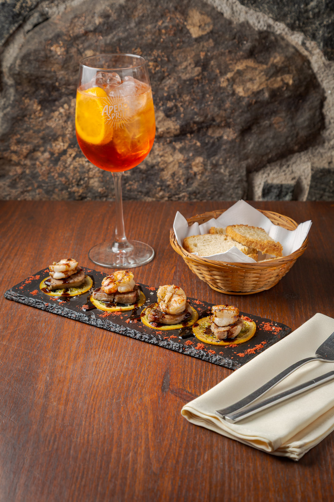
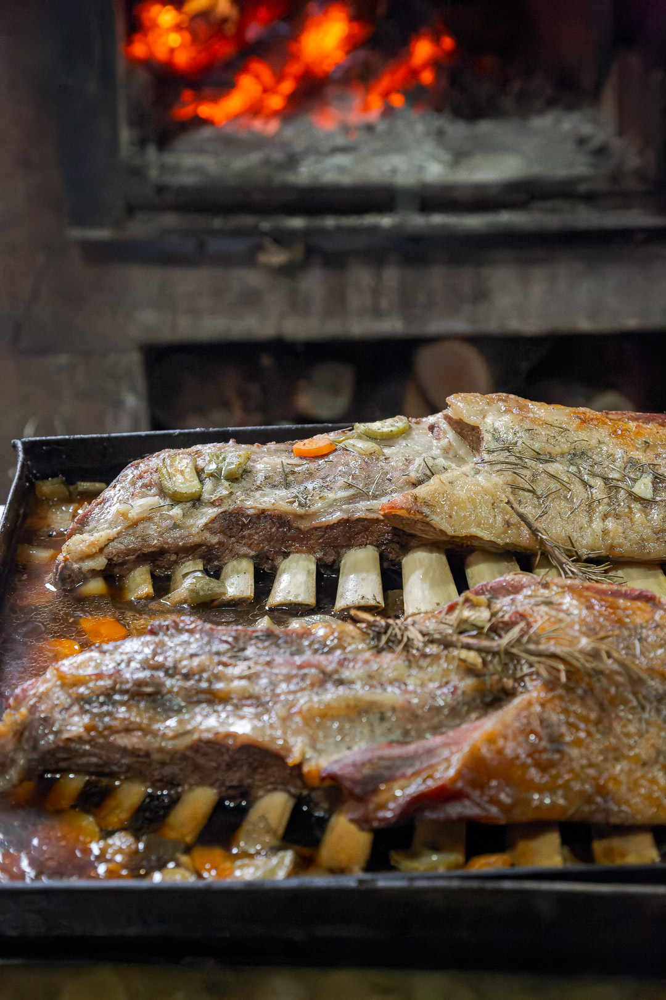
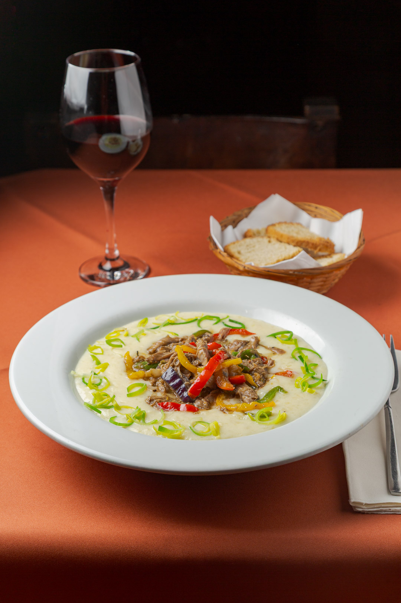
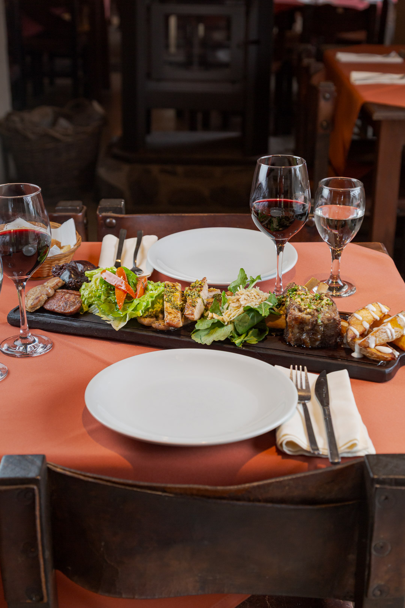
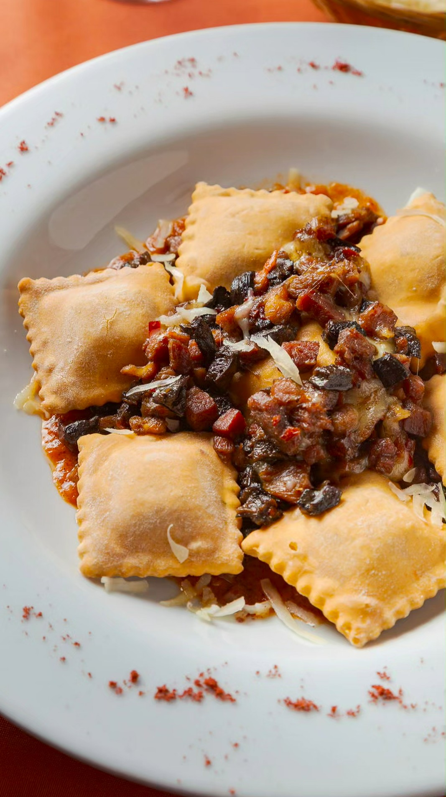
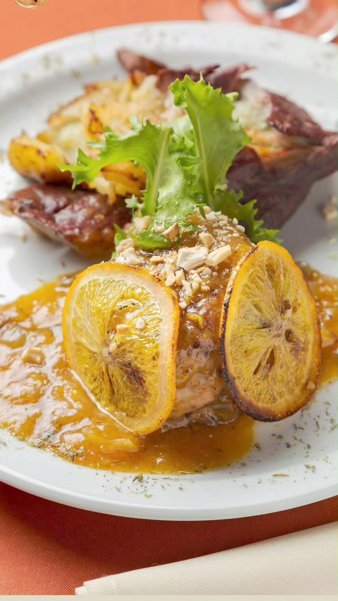
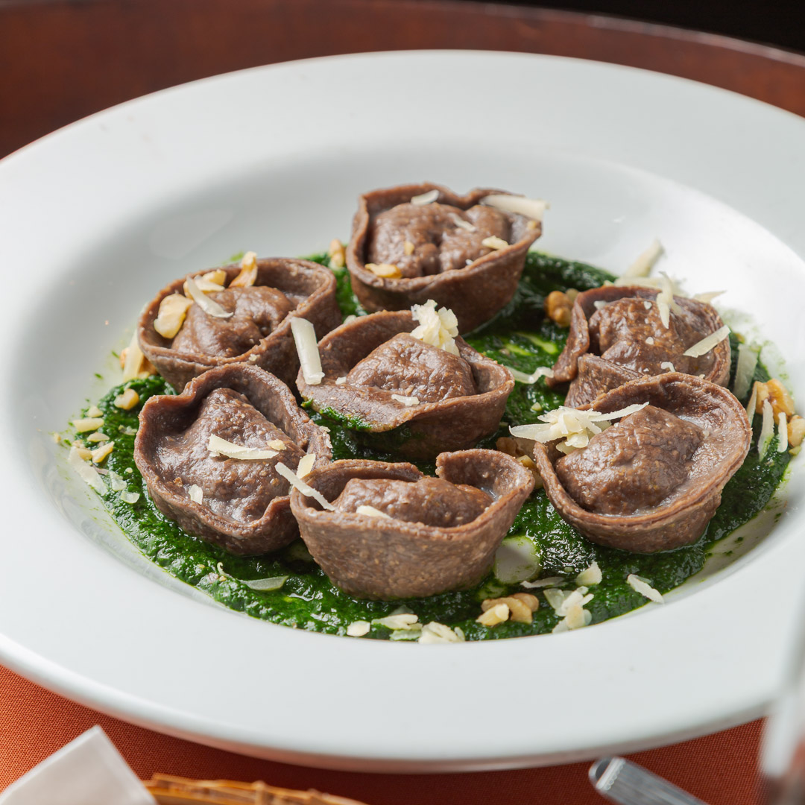
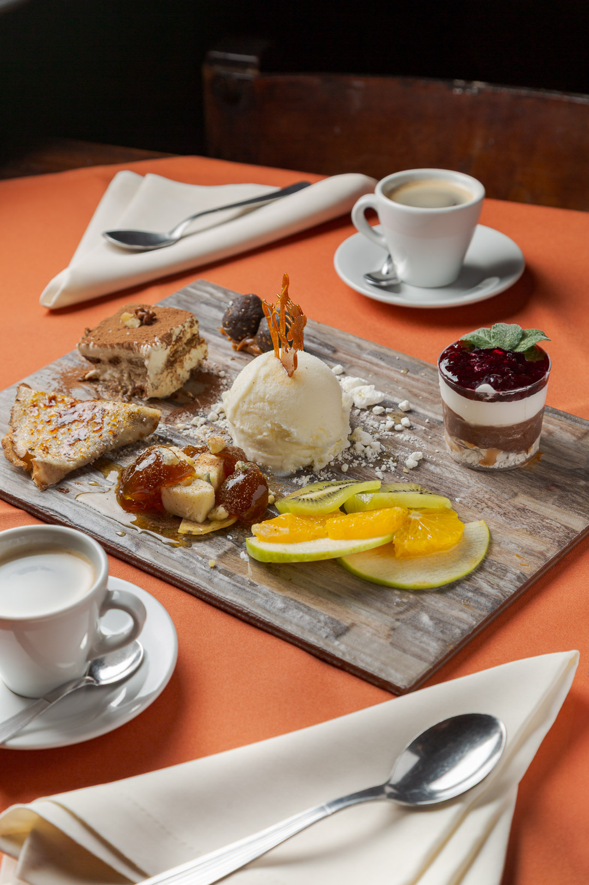

Cocina criolla gourmet
Una carta de estación: los precios y platos pueden variar según disponibilidad de producto.
Cocina Criolla con toque gourmet
Deasarrollamos platos de la cocina tradicional Argentina llevándolos a su máxima expresión.
Estos son algunos de los platos que vas a encontrar en la mesa. La carta completa, con los precios vigentes, está siempre actualizada en el PDF.

Di Cardenale

Costilla Braseada

Carito al Disco

Tabla de Carnes

Ravioles Fritos

Bondiola Braseada

Capeletis de Algarroba

Degustación de Postres